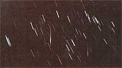

The meteors (in this time exposure shot) are the pink streaks with burts.
Most back-to-the-landers know plenty about leaning over and bending down. But it's almost time to lean back and look up! Don't miss:
Meteors are commonly called shooting stars, but-as you know-the cosmic objects aren't really stars at all. Instead, they're particles of space dust and rock that give off intense bursts of light (and occasionally sound) as they burn up in the higher reaches of our atmosphere.
Although meteors enter the earth's protective covering of air all the time (and a sharp-eyed observer can sight up to 10 "falling phenomena" an hour on almost any dark, clear night), the best astral displays occur when Spaceship Earth passes through a long trail of comet debris or, a denser-than-usual dust cloud. The amazing meteor showers that occur at such times can actually fill the entire sky.
As a matter of fact-on November 12, 1833-shooting stars sprayed over America's skies like a heavy blizzard of luminescent snowflakes . . . at a rate of 35,000 per hour! The stellar display was so astounding that-as one contemporary writer put it-"the population was impressed to the point of reform". Such superstar showers don't happen all that often, though, and are extremely difficult to predict.
Luckily, there are a few "regular" sky shows, and two of the best-known annual astral performances take place every July and August. If you go stargazing after midnight during either of those two showers and if the sky isn't blotted out by clouds-you can expect to see between 30 and 50 meteors an hour!
"Hold on a minute!" you may exclaim. "Does space dust punch a time clock? How come meteors don't fall before midnight?" Well, of course some sky stones do drop before the stroke of twelve (and during the day as well). However-because of the direction of the earth's rotation-you'll see more meteors after midnight than before. Why? Because an observer of the evening sky looks mainly at that part of space our planet is hurtling away from ... while-on the other hand-a predawn sky-watcher sees the section of sky we're all heading toward.
Let me put it this way: Suppose that you're driving a car in a snowstorm. If you face the back window, you'll observe very few snowflakes landing on the glass. But when you look ahead, you see scads of the white flecks.
This same switch in perspective takes place when you watch the evening sky. As you gaze at the stars over the course of a night, the movement of the earth rotates you from a position facing "backward" (in the early evening) to one looking "forward" (late at night). So after midnight-when you're in the "front-facing" direction-more meteors will meet your eyes. (In other words, more celestial snowflakes will "hit your windshield".) Got it?
The first regular summer shower-the Delta Aquarids-is "due in town" quite soon . . . around July 28. The moon will be no more than a first quarter "baby" on that date, so if the weather's good and you're facing south (in the direction of the constellation Aquarius), you should be able to do some rewarding sky-gazing.
While the Delta Aquarids' shooting star rate peaks at about 20 meteors per hour . . . the August 11 and 12 Perseids shower (which is so-named because most of the meteors appear to come from the constellation Perseus) will often produce more than 50 astral fireworks during the same period of time.
So-since both of the big showers this year will be blessed by a minimum of moonlight-all you'll have to do is get on a hilltop, keep your fingers crossed for good weather... and enjoy the show!
|
 |
|
|